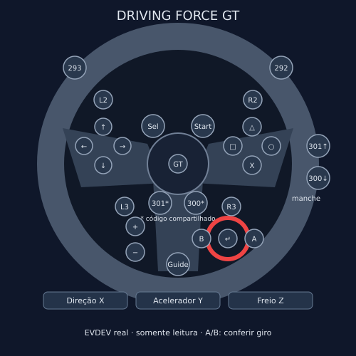
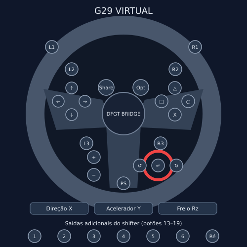

Steam startup
A user-level launcher waits for device readiness before starting the game. A restricted systemd service owns the hardware backend.
STEAMOS · LINUX · SIM RACING
DFGT Bridge presents a virtual HID wheel to Proton and DiRT 5, while routing approved constant force back to the original wheel through Linux EVDEV.
SteamOS and DiRT 5 operation, including 100% force feedback with polarity −1, was confirmed by the project owner.


The game sees a kernel HID device with G29 identity. PIDFF reports travel back through a supervised renderer. Physical output stays behind the DFGT's supported Linux EVDEV constant-force interface.
A user-level launcher waits for device readiness before starting the game. A restricted systemd service owns the hardware backend.
Edit buttons, axes, and game presets in the GUI. Profiles are shared by the GUI and command-line tools.
Emergency stop, watchdog, bounded EVDEV effect renewal, and game lifecycle monitoring protect the output path.
The owner confirmed SteamOS startup, DiRT 5 recognition, and the approved full-scale FFB profile.
483 deterministic cases use simulated devices; one native Tk smoke test was skipped because this environment has no display. The suite does not open physical devices or move the motor.
Complete fidelity for every force effect and compatibility with other games or systems are not established.
100% strength · 100% maximum · polarity −1 · slew 327670 units/s · unlimited normal session.
Full force can move the wheel abruptly. Secure the wheel, keep hands clear during setup, and keep the emergency stop available. Read the safety guide before use.
DFGT Bridge is not affiliated with, endorsed by, or sponsored by Logitech. Product names identify compatible hardware. Original diagrams are CC0-1.0.
The project code is licensed under GPL-2.0-only. See the repository for the full license and third-party notices.